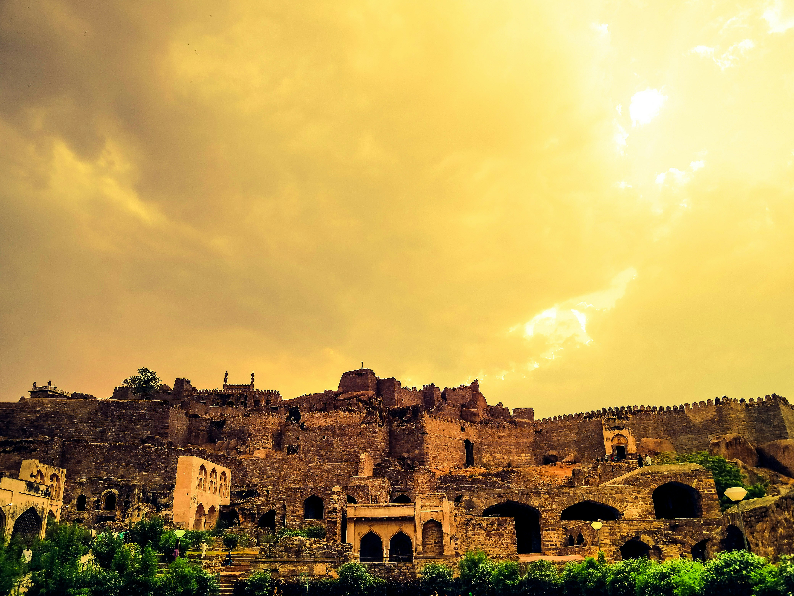

#Visit Old City
Top three activities to do at Old City
.jpeg)
Makkah Masjid
Makkah Masjid (or Mecca Masjid) is one of the largest and oldest mosques in India, capable of accommodating up to 10,000 worshippers in its courtyard and main hall. Located just a short walk (about 100 meters) southwest of the iconic Charminar, it is a key spiritual landmark and a core part of Old Hyderabad's historic heritage.
.jpeg)
Chowmahallah Palace
Chowmahalla Palace is one of the most prominent historic landmarks in Hyderabad, Telangana. Located in the Old City area near the Charminar, it served as the official seat of the Asaf Jahi dynasty and the residence of the Nizams of Hyderabad.
.jpeg)
Charminar
Charminar is the defining symbol of Hyderabad, Telangana, and one of the most iconic monuments in India. Located in the heart of the Old City on the eastern bank of the Musi River, it stands at the intersection of major historic trade routes.
.jpeg)
My Guide
"I have lived at Old City for Over 20 Years, so I can show you all of its best part and hidden secrets"